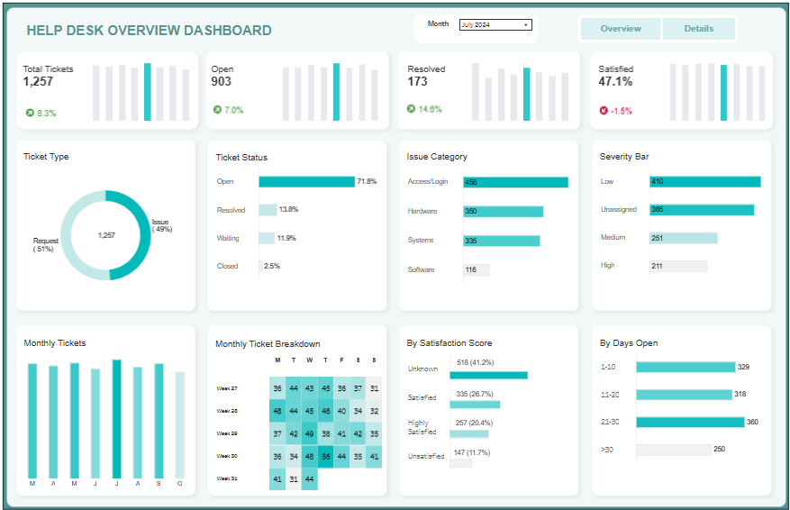
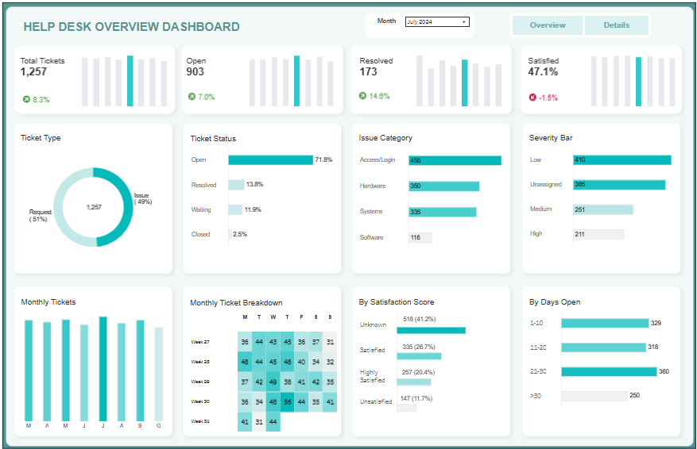

Data Governance & Compliance Risk Analytics
Power BI dashboard project translating governance and compliance audit metrics into quantified business risk and financial exposure using DAX-based scoring logic.

A SQL Project on Retail Sales, Retention, and Cohort Analysis
A real-world SQL retail analytics project using Superstore data to uncover sales trends, analyze customer retention through cohorts, and assess the impact of discounting.

Tableau Dynamic Zone Visibility Design Patterns
A two-part technical article series on designing clean, interactive Tableau dashboards using Dynamic Zone Visibility, parameter actions, and set-based interactions.

Credit Default Risk Analysis for Nova Bank
I applied Random Forest and XGBoost to credit risk data to uncover how borrower traits, loan details, and credit history influence default risk across the USA, UK, and Canada.
Click to Conversion: Tracking Paid User Behavior
This project analyzes user behavior before purchase by mapping paid users’ session journeys using SQL views and event tracking data.

Data Governance & Compliance Risk Dashboard Project
A risk-based data governance dashboard that converts compliance metrics into financial exposure and executive action priorities.